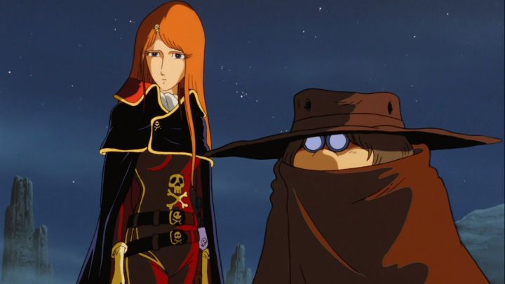

Disclaimer: This review is of the 1982 feature film "Arcadia of My Youth," also known as "Captain Harlock - Arcadia of My Youth" and "Arcadia of My Youth - Captain Harlock." It was originally released in English as "Vengeance of the Space Pirate." For a long time, I meant to get into the work of the old anime and manga creator Liji Matsumoto. He's best known for stories such as "Galaxy Express," "Space Battleship Yamato," and "Captain Harlock," all science-fiction stories, many of which have extensive continuations and spin-offs, all arguably part of the same fictional universe (with minor and major inconsistencies among them). However, at the time of this writing, I have not let gotten to any of them, and "Arcadia of My Youth" marks the first introduction I have to the franchise, specifically to the iconic character Captian Harlock.I expected some compilation of one of the many 70's or 80's television anime on the character, but "Arcadia" is actually a prequel origin story to the space pirate, hence why it was a big deal at the time and to this day. Set around the near 3000 A.D., space travel and alien life is the norm. But the planet Earth, due to lifestyles of Earthlings and the colonization from extraterrestrial beings, is barren and lacking in basic resources, like food. Most of the human Earthlings live in slums, cold and hungry, hundled together and doing as their overlords request. Their extinction, like other distant planets, seems inevitable. Harlock is a space pirate during these times, crash-landing into Earth, captured by the strict but civil aliens (the Illumidus Empire), and getting caught up into the fate of the human race, forced to take sides. The "Arcadia" in the title refers to several things. It's the name of the red bi-plane a distant ancestor of Harlock flew through dangerous mountains, and the name of the book that he writes about his passion for airplanes, a book that Harlock owns a copy of much later. It's the name of Harlock's final pirate spaceship by the final act of the movie. And it's also a place in literature claimed to be a paradise, used as a metaphor: the title of the movie could refer to the nostalgia to return to the days of your youth, days in the past when things were better, compared to things today. The movie even quotes a German poet: "At the end of their lives, all men look back and think that their youth was arcadia." There is a poetry to all of this, but it's perhaps too on the nose to reuse the word "Arcadia" in several different ways in the story, as if the viewer didn't catch the connection the first three times. On the otherhand, despite not being a "summary" of an existing story and getting a generous 2+ hour runtime, it feels like there's a lot of story missing in "Arcadia of My Youth." Harlock's adventures before the events of this movie are only briefly referred to, and being a Han-Solo-esque figure (the movie owes a lot to "Star Wars" and other sci-fi), I long to see or learn more about those earlier stories to better understand why everyone recognizes his name. I'd like to know why this tough and stoic Harlock was so obsessed with finding the beautiful woman on Earth named Maya (were they past lovers, allies, or something else?). For all the generous time spent on individual scenes (some scenes are definitely too long and unnecessary), there's still a lot missing to explain characters and their relationships.Like many other Japanese anime, "Arcadia" also has a lot of nostalgia for World War II, from Earth's current state being similar to the bombed-out Japan in the 1940's, and for the extended segment of Harlock's ancestor, a German pilot in World War II. Yes, both he and future aly mechanic Toshiro had ancestors that worked for the Nazi Germany and Japan alliance, the "bad side," during World War II, and despite wishing the senseless war would end, they did their job as required for the pay (complete with Nazi swastika on the planes they flew). That sequence ends with them fleeing to Switzerland in an attempt to escape French soilders at the end of the war. Exactly how the Japanese view WWII and their place in it is a cultural thing I don't understand and can't speak on, but this isn't the only anime that suggests they had a fondness for their duty, despite the generally unanimous attitude around the world against what Nazi's stand for today. It's a minor segment that doesn't necesarily speak to the future Harlock's character... in fact, it could have been removed entirely, perhaps to the film's benefit. So why was a full 12 minutes spent on it?  So yes, there's a lot of issues with editing choices and direction in "Arcadia's" story, and fans might be confused to only see Harlock in his signature black suit, red cape, eyepatch and pet raven in the final minutes of the movie. But there are individual scenes that are quite exciting too: a fun bar fight, a detailed warplane dog fight, and some dramatic moments of sacrifice as the epic story progresses. Maybe 20 minutes in total are excellent and still hold up well today, only pulled down for all the surrounding lore and context, indulgent but not quite introducing the universe properly to newcomers. The character designs for male characters are distinct. Harlock himself (and the multiple ancestors we see in flashbacks) looks great, with individual cells worthy of framing. Toshiro on the other hand, also iconic in his short, fat stature, looks completely out of place to everyone else, however much I like his character. Comparatively, all the important female characters look the same to me: all with tall, slender bodies and faces and light-colored hair. I couldn't tell if that was intentional, or just lazy. One female character, Pirate Queen Emeraldas, looks like a dopperlganger to Harlock, complete with a scar on her face: "Arcadia" shows how that came to be and why the two look similar, but again, it feels like a lazy disservice instead of making the female characters more original. Spaceship and other environment design choices are also not particularly impressive, a far cry from more iconic imagery before and after in the medium.Animation in "Arcadia of My Youth" isn't great, representing what I'd expect from Japanese anime in the early 80's. There are many shots will still frames that last for seconds, with creative camera pans and reused shots to be economical. However, there are individual scenes that look incredible: an airplane dogfight and the reveal of Harlock's final pirate spaceship are big examples. It's difficult to imagine those scenes being created with traditional analog cel-based processes, but somehow it was pulled off. Even for new, younger fans that grew up on digital-produced anime, there are details in the animation that can be appreciated today.One thing that older anime does right is appreciating the cinematic aspect of it, complete with excellent sympohnic orchestra. Music in "Arcadia" is lovely. The Japanese dub is generally good, with a particularly magnificant proglogue narration in the opening scene. The American Bluray from Discotek does include the old English dub, titled the "vintage" dub, and it shouldn't be used to judge the movie: the 1.0 presentation feels like it was ripped from an old VHS, and acting varies from simply OK to terrible (the English actor for Harlock himself is the most awkward voice, sadly). It's worth mentioning that Discotek's Bluray (their DVD release was one of the company's earlier catalog items, I believe) has a bunch of extras. These include a 4:3 aspect ratio SD version of the movie as a bonus: the HD version is cropped to 16:9, and the old format shows you were missing some content that way (watching THIS with the "vintage" English dub should make for a nostalgic experience for some). There's also an audio commentary from Mike Toole for the movie, which doesn't offer a ton of new information, but is still informative and easy to watch alongside subtitles in the film. The HD version does look quite good by the way, not exceptional, but good. All the praise older, pre-1998 anime gets seems to be from older audiences that grew up with them; having someone who wasn't yet born go back to watch these will give a very different opinion. My perspective falls in the later. I still do appreciate these historical examples, and I can completely see how "Arcadia of My Youth" would be considered a good, possbily even great, film. But there are just too many sloppy things that modern anime provides as a basic quality-of-life consideration, from story and pacing, to animation quality. Of course, it doesn't help that I was never a big science-fiction fan to begin with. After this, I don't have much inclination to watching more vintage Harlock stories, but maybe I'd better appricate the story in more modern retellngs (that is, between 2005 and 2015, my personal teenage years). Indeed, as the movie itself says: "all men think their youth was arcadia."
- "Ani" More reviews can be found at : https://2danicritic.github.io/ Previous review: review_April_and_the_Extraordinary_World Next review: review_Assassination_Classroom